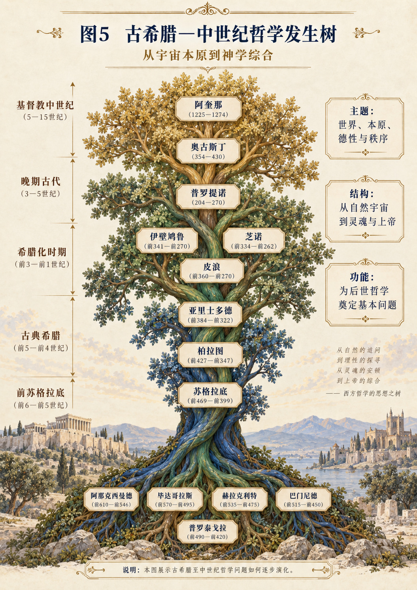

CHAPTER 17
第十七章 笛卡尔：从怀疑行动到确定性要求
跟随怀疑的展开，区分当下活动与实体结论。
一 当整座知识房屋的地基开始松动
设想一个研究者发现，自己长期使用的一项基础资料不可靠。问题随即超过这一条资料本身：哪些结论依赖它，哪些分类由它建立，哪些后续选择因此发生？逐条修改可能不足以解决，因为整个推论网络都在分享同一个未经检查的前提。此时，重新审查地基就成为一种合理任务。
这与随意怀疑一切不同。随意怀疑可以不断提出“也许不是”，却不说明何种检验能够结束怀疑；方法性的怀疑则需要目标、范围和重新接受判断的条件。笛卡尔节点之所以重要，在于它把既有信念暂时撤出确定性位置，试图寻找经受极端检验后仍能保持的起点。
从SDE看，原有知识S成为被审查对象，怀疑与分析构成D，原先支持这些知识的证据和规则E也被纳入检查。问题不再只是某个结论是否错，而是：一套认识何以具有可信资格？
二 悬置信任不等于把世界实际切断
《第一哲学沉思集》第一沉思展开怀疑，第二沉思讨论思维者的确定性与蜡块，后续沉思处理上帝、错误、物体和心身区别。其论证有明确推进次序；不能把第二沉思中的有限确定性，直接当作后面全部结论已经完成的证明。[R17；P17]
尤其需要分清：暂不把外部世界作为不可疑前提，与外部世界不存在，是不同主张。笛卡尔在方法层次悬置信任，不意味着一个身体真的脱离了空气、语言和历史。SDE若说“他切断E”，只能说明某类E暂时失去证据资格，不能把认识论操作误写成本体事件。
这项区别贯穿本章。我们可以指出怀疑活动仍有发生条件，但不能仅凭它有条件，就反驳它对证据资格的讨论。一个人在课堂上证明定理，确实依赖纸笔和教育；这并不意味着定理的有效性由纸笔决定。发生根据与论证根据需要同时研究。
三 第一道约束：把确定性要求提高到极端
在普通生活中，许多判断只需足够可靠即可使用。我们不必证明一把椅子绝不可能损坏，才坐下来。但现在增加一项特殊约束：本轮基础审查只接受不能被所设怀疑推翻的判断。这样，日常可用性与严格不可疑性分离，许多原先合理的信念暂时不能承担地基。
这一约束非常强，也非常昂贵。若无范围限制，人可能无法完成日常行动。因此，在发生树上，笛卡尔的基础审查应被标为特定研究模式，而不是全天候生活命令。它适合检查一个推论体系的关键前提，不适合要求人对所有实际事项无限延迟。
SDE的第一项变化于是清楚可见：不是S被全部宣布为假，而是S的接受规则改变。D开始按新的规则筛选E；过去的习惯、感官印象和权威记忆，不再仅凭熟悉就具有决定性地位。知识树的根部因此被重新打开。
四 第二道约束：注意怀疑发生时不能同时撤销什么
在极端怀疑中，存在一个特殊转折：即使某项经验内容被误导，正在经历怀疑这一活动的发生，不能以同一种方式被简单取消。这里的关键不是从一张经验名单中找到最牢固的对象，而是注意否认活动与被否认内容之间的关系。[P17]
本章将其重构为一个有限的表演性检查：当我正在怀疑自己是否存在时，不能同时把这次正在进行的怀疑当作完全没有发生。这个检查不同于普通归纳，也不等于先假设一个永恒自我再把它找回来。它首先涉及当前思维活动的确定性，而不是完整人生身份的确定性。
用SDE语言，可以从D中正在进行的怀疑，进入某种不可在同一行动中被撤销的显露S。但这个S到底具有哪些属性，仍需继续论证。说“此刻有思维活动”与说“存在一个完全独立于身体的持续实体”，之间不能只画一条没有说明的箭头。
五 从思维确定性到实体说明，桥梁在哪里
这里是生成树最需要放慢的地方。如果我们直接写“D怀疑推出S主体，再把S冻结，就得到心身二元论”，看似顺畅，实际上把许多哲学工作省略了。思维者如何被理解，什么叫清楚分明的认识，认识上的可区分如何支持存在上的区别，都需要各自的前提。[R17；P17]
本章因此区分两个模型。较弱模型只保留当前思维的特殊确定性；较强模型继续加入关于思维本性、广延本性及可靠认识的额外承诺。只有进入较强模型，才更接近笛卡尔的心身区别方向。SDE可以展示这条增加约束的路线，却不能声称第一步已经单独推出最后一步。
这项分层也防止反驳过快。指出思维有身体条件，并不自动解决所有心身问题；指出思维与广延概念不同，也不自动证明它们能够独立存在。概念、证据与存在三层必须分别检查。树的清晰来自桥梁被标出，而不是来自结论写得大胆。
六 蜡块为何不是一张固定特征表
第二沉思的蜡块讨论使我们看到：感官特征可以变化，而我们仍把对象判断为同一块蜡。这个案例涉及理解与判断在对象认识中的作用，不宜被简化成“感觉完全没用”。[P17] 对SDE而言，它也提供一个反问：若S是特征显露，特征大量变化以后，对象身份怎样保持？
我们可以提出一个发生性补充。对象辨认不只依赖当下颜色、气味或形状，还依赖对变化过程的追踪、材料连续性的理解以及可接受变换的规则。这些条件共同进入E，并支持D中的判断。因此，稳定对象并非一张静止属性清单，纠缠也不只是许多感觉同时出现。
但这个补充不应冒充已经推翻笛卡尔。恰恰相反，它与他要求超出表面感觉的判断问题发生对话。真正的分歧在于：这些判断能力及其有效性如何说明，理智在其中具有什么地位。若只争论“感性还是理性谁更重要”，问题会再次被粗化。
七 确信一种经验，与确信它的对象
设一个人感到自己受到轻视。感受的发生可以非常真实，但“对方有意轻视我”是另一项需要证据的判断。前者涉及当前经验，后者涉及他人的意图与行为解释。把两者混在一起，可能使真切感受承担它没有能力独自证明的事实结论。
笛卡尔节点能帮助我们把这两层分开。承认“我确实感到难受”，并不要求立刻承认所有关于难受原因的解释；要求核对原因，也不应否定感受本身。SDE再进一步追踪：怎样的语言、关系历史与当下行为，共同形成了这次显露？哪些证据支持一种解释，哪些支持另一种解释？
这是一项可以在日常使用的有限确定性方法。它不需要把世界全部放进怀疑，也不需要让当事人怀疑自己的每种感受。它只是防止从“经验确实发生”跨越到“我对经验对象的全部说明必然正确”。
八 如果把自我确定性变成特权，会发生什么
一个人可能借“我最了解自己”阻止任何反馈。他把意图当成行为的全部，把感受当成事实的全部，把自我叙述当成关系的全部。这里的确定性已经从有限的第一人称经验，扩展成对所有外部判断的豁免。扩展本身需要理由，不能由“我思”提供现成授权。
在SDE中，自我显露与他人的回应都属于需要研究的发生。它们可能发生冲突，但没有任何一方仅凭位置就自动拥有全部解释权。第一人称能够提供别人无法直接替代的体验材料，第三人称则可能提供行动后果与行为记录。二者的关系不是简单谁压倒谁。
因此，本章在树上的危险标记是“把有限确定性无限扩张”。它与柏拉图的标准独立性、弗雷格的逻辑客观性都有关，却不能混为同一种S冻结。不同的确定性主张有不同对象和不同边界，使用时必须保留这些下标。
九 构拟场景：检查一份看似完美的报告
一个团队收到一份数据报告，图表完整，结论清楚。负责人准备据此调整项目，却发现关键指标的口径曾经改变。此时最有效的做法未必是逐张图争论，而是找出所有依赖该指标的结论，暂时撤销它们的确定性资格，再逐步重建。
这是一条有限的笛卡尔式路径：选出基础前提，说明怀疑理由，追踪依赖关系，再设置重新接受条件。它不要求把报告中的每个字都认定为假。某些原始记录可能仍可靠，某些描述只是范围需要调整，某些结论则必须撤回。怀疑的精确程度决定重建是否可能。
SDE在这里把报告S、分析D与数据制度E连在一起。口径不是外部背景，而参与制造指标本身。新的检查结果又应回写到数据字典和流程，而不是只改一次结论。于是，基础审查不止生产一份较可靠报告，还改变下一轮报告产生的条件。
十 构拟场景：从他人评价里找回有限起点
另一个人收到负面评价后认定：“我没有任何价值。”这不是一个可以由一条评价直接支持的结论。沿本章方法，可以先问哪些内容确实成立：有人表达了不满，某项任务可能没有完成，自己感到受挫。至于“全部价值为零”，已经跨越了这些材料的支持范围。
有限起点不是一句夸大的肯定：“我肯定无比优秀。”它可以只是“我正在经历一次挫折，尚需弄清它涉及什么”。这个起点足够让后续D继续，而不必先得到对全部人生的最终裁决。接着，再区分可以修正的能力、需要协商的期待与不应接受的伤害性评价。
这里调用笛卡尔不是为了建立一个孤立自我，而是暂停未经证明的总体判决。后续应转向关系、实践与能力形成的节点，重新连接E。怀疑只负责打开地基，不能成为人永远居住的地下室。
十一 同一句“我在思考”为什么不能自动证明同一件事
在书籍、戏剧或计算系统输出中，都可能出现“我在思考”这句话。文字形式相同，并不能自动证明它们具有同一种第一人称经验。笛卡尔式检查依赖正在发生的主体性活动，而不只是一个句子被印出来。语言表面与活动性质不能互相替代。
SDE研究若面对人机互动，应分别记录输出S、生成过程D与技术及使用条件E。它可以研究一个系统怎样产生自我描述，但不能仅凭自我描述就宣称已经证明意识，也不能只因机制可解释就未经论证地取消一切相关问题。本章不提供现成的意识判准，而是防止概念层次被跳过。
这个例子也反向检查全书：如果一个模型输出了“我已经生出康德”，那仍然只是一个显露。是否真正完成重构，要看约束、论证和原典对照。术语自述没有自动授予自己所宣称的能力。
十二 从主体起点重新走向共同世界
笛卡尔的研究并不停在孤立的怀疑，它继续尝试重建可靠认识与物体世界的说明。[R17；P17] 对发生树而言，重要的是把这次返回也画出来。若只留下“我思”，读者会误以为哲学的任务是永远从世界退回自己。
SDE可以把这条返回路径视为一个需要逐步论证的再连接过程：哪些经验被重新接受，什么规则支持它们，先前的怀疑如何改变后续信任？信任不是回到未经检查的习惯，而是带着边界重新形成。它能够接受局部错误，而不必因为一次错误就取消全部世界。
这种有限重建对现实生活更有用。人既不必把每个印象当成事实，也不必等到绝对保证才开始行动。不同任务需要不同的证据强度，哲学的基础审查与日常可修正判断可以并存。
十三 节点结论：把确定性缩到它真正能够承担的地方
本章从SDE出发，先改变知识接受规则，再让怀疑活动本身成为研究入口，得到当前思维活动的特殊确定性；随后明确加入额外前提，才通向更强的主体与心身说明。这样的重构保留了推导的层次，不把一个起点冒充整套体系。
它适合用于前提污染、经验与解释混淆、自我价值被一句话总体否定，以及复杂推论需要重新检查的处境。它的边界同样清楚：怀疑不是无限生活方式，第一人称确定性不是对全部事实的特权，概念可区分也不自动证明实体可分离。
在发生树上，笛卡尔既是一条向内收缩的枝，也是一条要求重新建立外部连接的枝。他给SDE留下的研究纪律是：不只追问一项知识怎样发生，还要追问它凭什么值得相信。发生的解释与相信的理由，必须相遇，却不能互相冒充。
原典阅读入口：《第一哲学沉思集》第一、第二、第六沉思，并结合第三、第四沉思理解可靠性问题。网络页面标题中的年代标注不作为本书出版年依据；以作品通行书目与原典版本核对。[P17；R17] 相邻节点：第十五章奥古斯丁、第十八章斯宾诺莎、第四十二章康德。
留给读者的问题 从“正在思想”到“我是怎样的存在”，中间还需要什么理由？